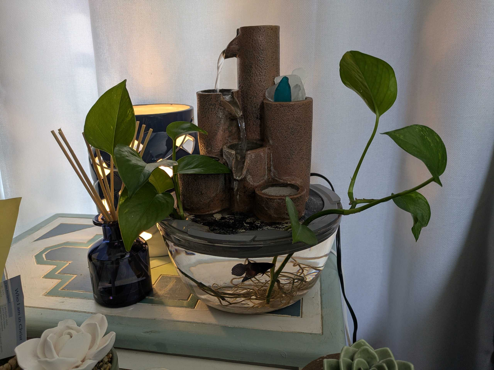

Sheet 004 — Project Detail
A custom ring that suspends a cascading water fountain above a glass bowl, made as part of a bespoke fish habitat.
This interactive 3D model needs a browser that supports 3D content — try a recent version of Chrome, Edge, Firefox, or Safari.
Interactive model — drag to rotate, scroll to zoom.

A personal client presented their idea for the part as the key piece for assembling a custom fish habitat: something to hold a store-bought cascading fountain above a glass bowl so the whole thing reads as one aquascape.
The ring was made to let the fountain sit below the outer lip of the large glass bowl, tilted forward at an angle so water cascades inward and doesn't spill outside the bowl. A small notch near the back lets the fountain's power cord bypass the base without interference. Three large circular cut-outs near the front let the fish be fed without removing the fountain from the ring, and give the plants a place to rest their roots in the water.
A functional part that made the finished build possible — an aesthetically pleasing habitat where the fountain, plants, and fish share one bowl.